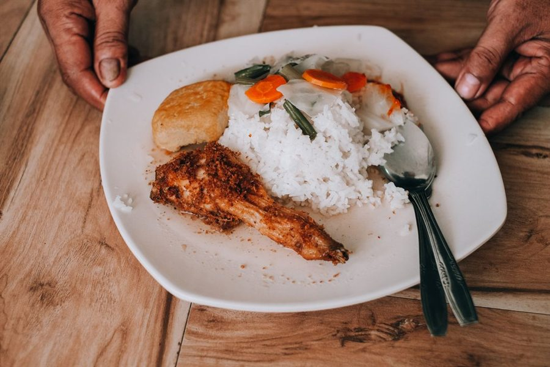

Type 2 diabetes
See which everyday meals push your blood sugar up and find easy swaps you'll actually keep.
Snap your plate. Glyde shows the carbs, your likely blood sugar spike and simple swaps to soften it. No CGM needed.


Knows the food you actually eat
Whatever your starting point, Glyde helps you see which meals are gentle on your blood sugar and which ones to tweak.
See which everyday meals push your blood sugar up and find easy swaps you'll actually keep.
Quick carb estimates for every plate, from a photo, a barcode or a few words. Glyde never gives dosing advice.
Build steadier habits early with a daily spike score and low-spike meal ideas.
Want fewer energy crashes after lunch? Learn how different foods affect you, no sensor required.
Three steps from your plate to a better choice.
Point your camera at any plate and Glyde names each food, estimates the portion and counts the carbs. Packaged food? Scan the barcode. In a hurry? Just say or type what you ate.

Glyde estimates how likely the meal is to spike your blood sugar and the shape of the next two hours, with a plain-English reason. Then try a swap and watch the curve soften. Go on, tap one.
An estimate from the food alone, not a glucose reading.
Ask anything about food and blood sugar. Glyde answers in plain words, using the meals you've actually logged, and suggests what to try next time.
A daily spike score, a monthly heatmap and the foods that spike you most.

Six fresh ideas every day, each with ingredients and simple steps.

Packaged food with the label's real nutrition values.
Voice logging that understands dish names from anywhere.
Got a food wrong? Tell Glyde and the numbers update.
A gentle nudge at mealtimes, so you check before you eat.
Meals, photos and chats stay on your phone.
Remove your account and data from the app in one tap.
Continuous glucose monitors are expensive, and most people with diabetes don't have one. Glyde gives you a useful read on every meal from the food alone, so small changes add up.
Every feature on every plan. Cancel anytime in your iPhone's Settings.
3 days free, then about $0.77 a week.
Billed every month.
Billed every week.
Prices in US dollars; the App Store shows your local price. Subscriptions renew automatically unless cancelled at least 24 hours before the end of the trial or period.
No. Glyde gives AI estimates based on the food you scan or describe. It doesn't measure blood sugar, diagnose or treat anything, and it never gives medication or insulin advice. Always follow your doctor or diabetes care team.
No. Glyde works from the food alone, so you get a read on every meal without any hardware.
Glyde uses standard carb values for foods from around the world. Portions from a photo are estimates, so you can change any food's amount, or fix the result in your own words, and the numbers update instantly.
Yes. Glyde recognises dishes from many cuisines, and you can tell it the cuisines you eat most so it gets your dishes and portions right.
Tap "Fix results" and tell Glyde what you actually ate, like "brown rice, not white". It re-analyses the meal straight away. You can also tap any food to change its amount.
Your meals, photos and chats stay on your phone. Photos, voice notes and messages are analysed by our AI providers to give you an answer and are not kept. You can delete your account and all data from the app at any time. Read the privacy policy.
Cancel anytime in your iPhone's Settings: tap your name, then Subscriptions, then Glyde. Or open Glyde and go to Profile, then Manage subscription. Refunds are handled by Apple at reportaproblem.apple.com.
Glyde is coming to the App Store. Try every feature free for 3 days.
Android coming later. Email us and we'll tell you the day it launches.